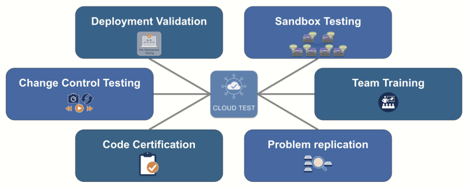

Arista UpstateNY Region Newsletter¶
Welcome to the November 2025 newsletter for Arista customers in the U.S. Upstate NY Region!
We welcome your feedback on the newsletter. If you have any ideas on what you want to see, please reach out to UpstateNY@arista.com
Upcoming Events 🗓️¶
Arista hosts various events throughout the year for you! Members of our team organize these informative events to showcase Arista's ability to not only help improve your network, but to also assist by providing a set of tools to improve your operations! Click on the boxes below to be directed to Arista's website for lists of Webinars and Events.
-
Local Upstate NY Events

Date Name Description Location & Registration November 20 Next Gen Campus with Arista - WiFi & NAC Edition Hands-on access to configure CV-CUE, CVaaS, AGNI, and your own AP. Deepen your understanding of Arista's Campus solutions. Syracuse NY Register December 4 NetDevOps: Network Automation Workshop Part 1of2 Automation Fundamentals Rochester NY Register December 11 NetDevOps: Network Automation Workshop Part 2of2 CI using Arista Vaildated Diesgns (AVD) Rochester NY Register
-
Global Webinars
We make it easy for you to view products that are of interest, all virtually! Technical members of the team showcase outstanding explanation of the products. Click below to see our list of Webinars.
-
Global Events
Join us in person to get a closer look in our list of products and solution, as well as get the chance to meet members of the team. Click below to see our list of upcoming Events.
Software Updates ⚙️¶
-

Software Version Release Date EOS 4.35.0F
4.34.3.1M NEW
4.33.5M
4.32.8M NEW
4.31.9M
4.30.10MOct 1st, 2025
Nov 4th, 2025
Sept 3rd, 2025
Oct 24th, 2025
Sept 4th, 2025
April 18th, 2025CVP Portal 2025.3.0 NEW
Appliance 7.1.0
Sensor 1.2.0Oct 13th, 2025
Sept 2nd, 2025
Sept 4th, 2025DMF 8.8.0
8.7.2
8.6.2
8.5.3August 15th, 2025
July 25th, 2025
June 23rd, 2025
June 20th, 2025WLAN CV-CUE 20.0.0-179
AP-21 21.0.0-88vv4 NEW
AP-20 20.0.0-183vv3
AP-19 19.0.0-183vv18August 20th, 2025
Oct 20th, 2025
Sept 16th, 2025
Sept 21st, 2025Arista NDR 5.3.5 June 2025 TerminAttr 1.40.3 Sept 22nd, 2025 VeloCloud Orchestrator 6.4.1 NEW
Gateway 6.4.0
Edge 6.4.0Oct 2025
May 2nd, 2025
May 2nd, 2025For all code releases, click here
Software Advisories 🚨¶
-

To view more details, click the advisory links below.
Name Advisory Link Date DMF / CCF / CVA / MCD Advisory 0124 NEW Oct 22, 2025
Update: Sept 30, 2025Edge Threat Management / NG Firewall Advisory 0123 NEW Oct 21, 2025 Encryption key configuration may be logged in clear text Advisory 0122 July 22, 2025
Update: Sept 30, 2025Maliciously formed UDP packets Advisory 0121 July 22, 2025
Update: Sept 30, 2025ACL policies may not be enforced Advisory 0120 May 27, 2025 IPsec may exhibit unexpected behavior Advisory 0119 May 27, 2025
Update: June 4, 2025VLAN isolation and segmentation boundaries Advisory 0118 May 20, 2025 Remote-server credentials Advisory 0117 May 6, 2025
Update: May 20, 2025Time Bound Device Onboarding Advisory 0116 April 15, 2025 ZTP Admin Privileges Advisory 0115 April 15, 2025 Malicious Authenticated User Advisory 0114 April 15, 2025 EOS Secure VxLAN Advisory 0113 April 8, 2025 OpenSSH Advisory 0100 July 8, 2025
Update: Sept 29, 2025For a list of the most current advisories and notices, click Here
Product Updates 🏷️¶
-

End of Sale notices are listed below.
Field Notices NOT related to End of Sale can be hound here
-
New Releases of Arista devices are listed below.
Device More Information Release Date Arista's Next Generation Data and AI Center Hardware NEW New 800G R4 series portfolio accelerates routing and AI at scale Q4 2025
Arista VeloCloud Expanded AI-Driven Campus and Branch Networking Offerings Q3 2025 Arista Cluster Load Balancing (CLB) Intelligent Innovations for AI Networking Q2 2025 The Ultra Ethernet Consortium A major milestone in redefining Ethernet for the AI and HPC Q2 2025 Arista SWAG Modern Stacking for Campus Q1 2025
Spotlight 🔦¶
Take a look at New 800G R4 series portfolio! NEW
Take a look at these Arista testimonials from an A-List of A.I. industry luminaries!
Article #1 - Digitize your network with ACT¶
By: Alex Longhenry, Advisory Services Engineer, Upstate NY Region
Rethink How You Test and Evolve Your Network
As we all know, network uptime is critical. However, testing, making configuration changes, or evolving your network often requires scheduled maintenance windows — typically after hours, over the weekend, or, for 24/7 operations, during the few opportunities available each year. This limited flexibility can slow innovation, delay automation efforts, and increase operational risk. But what if you could test, validate, and evolve your network — anytime — without impacting production?
Introducing Arista Cloud Test (ACT)
Arista Cloud Test (ACT) provides a cost-effective, scalable, and flexible platform for network testing, automation development, and training. With ACT, you can replicate your entire network virtually, creating a fully configurable digital twin powered by vEOS that supports thousands of nodes. This means you no longer have to wait for a maintenance window to see whether a configuration change might disrupt your network. Instead, you can test safely and repeatedly in a simulated environment that mirrors your production setup.

Empowering Automation and Agility
ACT integrates seamlessly with Arista Architect, Validate, Deploy (AVD) and GitLab, enabling your automation teams to develop and test scripts long before physical hardware arrives. This accelerates deployment timelines, enhances confidence in configuration changes, and reduces risk. You can also deploy a CloudVision node within your lab environment to explore new CloudVision features and leverage its powerful automation capabilities to orchestrate and manage your virtual network.
Backed by Arista TAC Support
Even in a lab environment, you’re never on your own. All ACT environments are fully supported by Arista’s Technical Assistance Center (TAC) to ensure your virtual labs remain accessible, stable, and performing as expected.
Transform the Way You Innovate
With Arista Cloud Test, you can:
- Validate network changes before deployment
- Develop and test automation workflows in a risk-free environment
- Train your operations teams on real-world scenarios
- Scale testing to thousands of virtual nodes with minimal cost
- Arista Cloud Test empowers your organization to innovate faster, reduce downtime risk, and evolve your network with confidence.
Article #2 - Blame the Network!¶
By: Randy Longhenry, Account Executive, Upstate NY Region
Large Network Operational Challenges (and a Few Lessons Learned)
Back in late 2017, I stepped into a new role as Network Manager for a large financial services company that moved nearly $1 trillion a year through its network. To put that in perspective — only about a dozen organizations on the planet (banks + payment networks) handle more than that annually.
Most of our business happened between 8 AM and 8 PM, Monday through Friday, and each minute of downtime was worth roughly $5 million in financial impact.
Let’s just say, keeping the network up wasn’t just important — it was existential.
The Landscape I Inherited
I took over a network spanning:
- 3 primary data centers
- Half a dozen smaller data centers
- ~150 remote offices and processing centers
- A handful of subsidiary networks and several cloud connections
All supported by a lean team of 15 engineers responsible for every bit of design, deployment, and day-to-day operation — routing, switching, circuits, wireless — the works.
Coming from the world of network vendors, I felt ready. I’d worked as a Systems Engineer for two major manufacturers and knew the solutions extremely well. I believed that the manufacturer we used was the industry standard for data center, campus, WAN, and wireless domains — I knew how they should work. I was optimistic.
For a while.
The Reality Check
A few months in, the honeymoon was over. Here’s what I discovered:
- Fragmented Environment: Five product types, each running its own OS — and over 20 software versions in production. No easy way to track, govern or upgrade them - and a nightmare to integrate with.
- Disjointed management: Three separate management systems, none fully deployed or current (too much manual overhead).
- Zero automation: Almost all tasks were manual — even the routine ones that begged to be scripted. The current hardware was simply not automation-friendly at all, and there was no standard automation environment.
- Limited visibility: Just SNMP polling and a couple end-of-life flow collectors. We had no real view into what traffic was doing.
- No reliable inventory: Diagrams were mostly outdated, documentation was scarce and “tribal knowledge” was the most reliable source of how things were built.
- Security: very difficult and time consuming to apply uniform policies across such fragmented silos - and fragments inside of silos.
The results?
- Everything was configured manually through the CLI — one typo away from a $5M per minute outage.
- Managing code, bugs, and vulnerabilities was chaos.
- Troubleshooting meant diving into port counters with good instincts and following the breadcrumbs.
The network was tough to manage, harder to troubleshoot, and — inevitably — the first suspect whenever anything broke in IT. You know the drill: “Blame the network!”
Managing Risk (and Little Sleep)
At that point, my real job title might as well have been Risk Manager. We made almost all changes after hours or on weekends. Every update carried weight — layers of approvals, manual steps, and plenty of stress.
The network’s complexity slowed everything down, which hurt the business we were supposed to empower.
Sound familiar?
Enter Arista: A Breath of Fresh (Network) Air
Fast forward to 2020.
While evaluating a data center refresh, I came across Arista — and it checked every box I’d been wishing for:
Why Arista Was a Game-Changer
- One OS to rule them all: A single EOS across data center, routing, and campus — no more juggling 20 software versions.
- Stability and security: EOS was rock solid. No more code roulette or bug hunts every upgrade cycle.
- CloudVision: The operations portal I always wanted, with:
- Inventory management: Real-time hardware/software state, bug and CVE awareness, automated alerts.
- Automation tools: Configlets and “studios” for consistent, template-based changes.
- Change control: Task management, approvals, and automation integration built right in.
- Observability: True streaming telemetry (not polling!) for live flow visibility and custom dashboards.
- Topology awareness: Real-time network views showing connectivity, utilization, and flows.
- Open standards: Universal CLI and no proprietary lock-in — easy integration across environments.
- Outstanding support: Calls answered within a minute by an architect-level engineer, not a gatekeeper checking contracts.
The Results
Since adopting Arista:
- Operations greatly simplified: Faster deployments, easier management.
- Reliability improved dramatically: Fewer issues, faster troubleshooting, and better collaboration across IT.
- Security strengthened: Vastly fewer vulnerability exposures and predictable upgrades.
Most importantly to me:
- Team morale improved greatly:
- Less after-hours work.
- Reduced change risk.
- Quick, expert support when things went sideways.
Overall, the network stopped being “the problem” — it became a trusted, stable foundation for the business.
“Blame the Network”? Not anymore. Go find someone else to pick on!
Feel Free to Reach Out To Us For Your Network Needs¶

We thank you for taking the time to read our newsletter today. Feel free to reach out to your SE or ASE for more information or questions regarding your network operations. Until next month, have a good one!